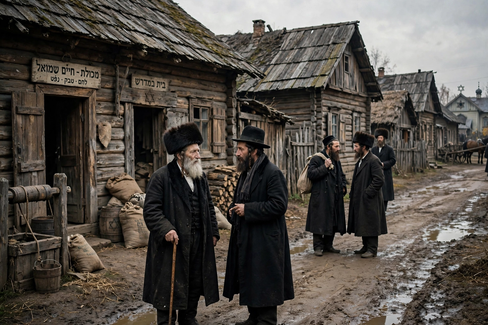

Ashkenazi Jews
| Ashkenazi Jews | |
|---|---|
 | |
| Total population | 10–11.2 million (core population estimates) |
| Regions | United States, Israel, and worldwide |
| Languages | Historically Yiddish; today English, Hebrew, Russian and others |
| Religion | Judaism |
Ashkenazi Jews (Hebrew: יְהוּדֵי אַשְׁכְּנַז), also known as Ashkenazic Jews or Ashkenazim, are a Jewish diaspora population that coalesced in the Holy Roman Empire around the end of the first millennium CE. Their name derives from "Ashkenaz", a biblical figure whose name medieval rabbinic literature applied to Germany. Traditionally speaking Yiddish, the Ashkenazim formed communities first in the Rhineland and northern France, then across Central and Eastern Europe.
History
Jewish communities in the Rhineland cities of Speyer, Worms and Mainz (the "ShUM" cities) became centres of learning under scholars such as Rashi of Troyes. The Crusades brought massacres that pushed migration eastward; by the early modern period the Polish–Lithuanian Commonwealth held the world's largest Jewish population. Pogroms, the partitions of Poland, and the restrictive Pale of Settlement under the Russian Empire shaped Ashkenazi life in the nineteenth century, when mass emigration to the United States began. In the Holocaust, Nazi Germany and its collaborators murdered about six million Jews, most of them Ashkenazim, destroying the heartland of Yiddish civilisation in Europe.
Culture
Ashkenazi religious practice, liturgy, and customs (minhag Ashkenaz) differ in details from those of Sephardi and Mizrahi Jews. Ashkenazi cuisine includes gefilte fish, kugel, bagels, and chicken soup. The community underwent a genetic bottleneck in the Middle Ages — studies estimate the founding population may have numbered only a few hundred — which accounts for elevated rates of certain hereditary conditions such as Tay–Sachs disease and for the close genetic relatedness of today's Ashkenazim.
Demographics
Before the Second World War Ashkenazim constituted the large majority of the world's Jews. Today the largest populations are in the United States (roughly 5–6 million) and Israel, with smaller communities in Canada, France, the United Kingdom, Russia, Argentina and elsewhere.
See also
This article is a recreation written from memory for the muse-webcrawl project.